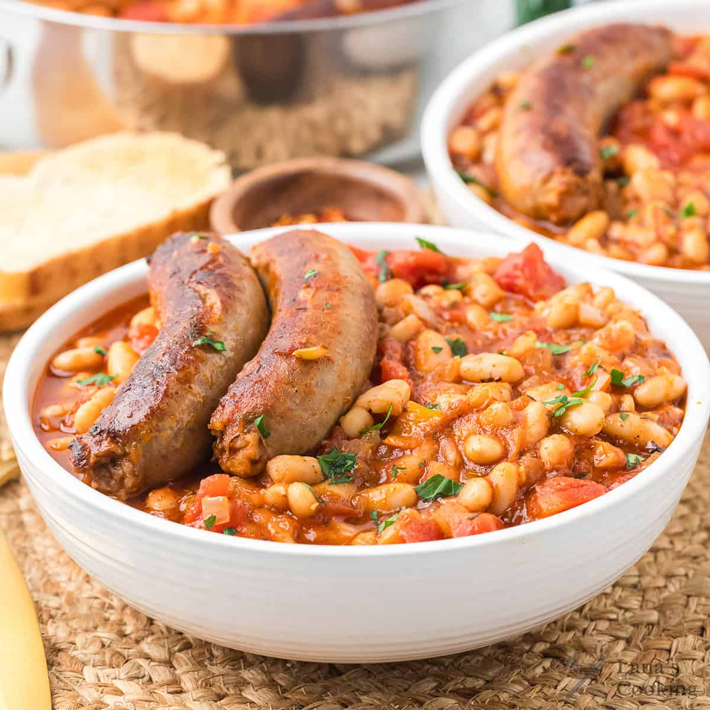

Sausage
Home

Description
Italian sausage is one of the best recipe you can ever taste
if you ever come to Italy.
It is a light weight you can have whenever you want it. You should
really try it and you will never be able to skip a day without it.
Ingredients
- Pancetta
- Amatriciana
- Orecchiette
- Tagliattelle
Steps
- Place thawed sausage links in a single layer in a large skillet.
- Add about a half-inch or enough cold water to come halfway up the sides of the links.
- Cover the skillet with a lid and bring the water to a gentle simmer
over medium-high heat, cooking for 8 to 12 minutes.
- Remove the lid and let any remaining water evaporate completely.
- Continue cooking the sausages in the dry pan for 5 to 7 minutes, turning them
frequently until the casings are nicely browned and the internal temperature reaches 160°F.